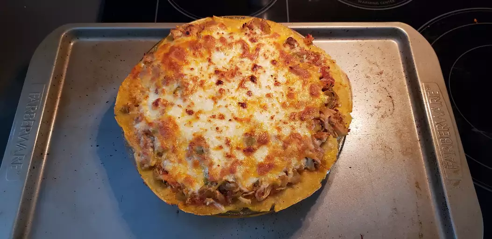

Hatch Chile Enchilada Pie
Tasty comfort food and a fun way to use slightly spicy, slightly sweet Hatch chiles when they're available at the grocery store.

Ingredients
- 6 Hatch chile peppers, sliced in half lengthwise and seeded
- 3 tablespoons olive oil, divided
- 2 tablespoons butter
- 1 pound skinless, boneless chicken thighs
- 2 ½ cups chicken broth, divided
- 1 onion, chopped
- 4 cloves garlic, minced
- ¼ teaspoon dried oregano
- ¼ teaspoon ground cumin
- salt and ground black pepper to taste
- ½ (14.5 ounce) can diced tomatoes, drained
- 12 (6 inch) corn tortillas
- 1 (8 ounce) package shredded Mexican cheese blend
Directions
- Set oven rack about 6 inches from the heat source and preheat the oven's broiler. Line a baking sheet with aluminum foil.
- Arrange Hatch chiles, skin-side up, on the prepared baking sheet. Brush with 1 tablespoon olive oil.
- Cook under the preheated broiler until the skin of the peppers has blackened and blistered, 5 to 8 minutes. Cool; remove and discard skins. Roughly chop chiles.
- Melt butter in a large skillet over medium-high heat. Cook chicken thighs until browned, about 2 minutes per side. Pour 1 cup chicken broth over thighs and bring to a boil. Cover skillet and reduce heat to medium. Cook the chicken thighs until no longer pink in the center and the juices run clear, about 5 minutes. An instant-read thermometer inserted into the center should read at least 165 degrees F (74 degrees C). Remove from heat.
- Heat 2 tablespoons olive oil in a large pot or Dutch oven over medium heat. Cook and stir onion, garlic, oregano, cumin, salt, and pepper in hot oil until onion is soft, about 6 minutes. Stir chopped chiles, tomatoes, and 1 1/2 cups chicken broth into onion mixture. Bring to a boil, reduce heat to medium-low, and simmer until chiles and onion are tender, 20 minutes.
- Mash chile-onion mixture to a sauce consistency. Remove chicken thighs from chicken broth, reserving 1/2 cup broth. Stir thighs into chile sauce; cook until chicken is heated through, about 2 minutes.
- Preheat oven to 350 degrees F (175 degrees C).
- Spread a thin layer of chile chicken sauce on the bottom of an 8-inch pie dish. Arrange a layer of corn tortillas over sauce, spread another layer of chile chicken sauce over the tortillas, and sprinkle Mexican cheese blend over sauce. Repeat layering process until all tortillas, sauce, and cheese are used, ending with a layer of cheese. Pour 1/2 cup reserved chicken broth over the top.
- Bake in the preheated oven until cheese is melted and sauce is bubbling, about 30 minutes.
home